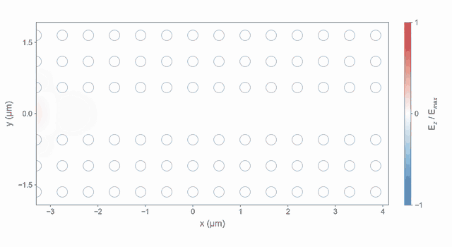

Full-wave photonics on the GPU, with gradients.
TorchFDTD simulates Maxwell's equations on NVIDIA GPUs with fused CUDA kernels, returns discrete adjoint gradients through PyTorch autograd, and opens every project in a browser CAD workbench.
pip install torchfdtd
Fused kernels make the time stepping fast.
Meep and FDTDX rows: vacuum and sphere scenes at 64³ and 96³, 800 steps, RTX 3060 against Meep on an i7-12700. Conditions, hardware and raw records are in the cross-solver comparison and the measurement record.
Fused CUDA kernels
One launch updates the fields, the CPML and the dispersive terms of every cell, and CUDA Graphs remove the per-step launch cost. Memory traffic stays close to the minimum bytes per cell.
Reversible adjoints
The backward pass rebuilds earlier fields by running the update in reverse, so gradients need only the boundary record instead of every time step.
Beyond GPU memory
Streamed execution moves state between VRAM, DRAM and NVMe with measured reservations and a restart journal for runs that outgrow the card.
Optimize a device in a few lines of PyTorch.
A 2D wavelength splitter: one input guide, a 3 × 3 µm design region and two output guides. The adjoint of both wavelengths comes from one run. After 60 Adam updates on a CPU, the thresholded design sends 97.5% of 1.31 µm light up and 93.2% of 1.55 µm light down.
optimizer.zero_grad(set_to_none=True)
epsilon, density = material(theta, project, beta, background)
t = transmissions(model, epsilon, project, incident)
loss = -objective(t) # [port, wavelength]
loss.backward() # discrete Yee/CPML adjoint
optimizer.step()
Freeform metasurfaces at full aperture.
Tiled 3D full-wave adjoints with angular-spectrum propagation design a 200 µm nine-wavelength lens, a color hologram and a polarization-switched hologram. Drivers, configurations and optimized layouts are in the repository.


From waveguides to resonators.



One project, in Python or in the browser.
- Browser workbenchObjects tree, XY/XZ/YZ and 3D CAD views, materials, monitors, field viewer and Python export.
- Python APIOne Project JSON shared with the browser, batch runs across GPUs, many structures in one CUDA launch.
- GradientsCheckpointed and reversible adjoints for density, shape, dispersive, Bloch and source parameters.
- Physics2D and 3D Yee grids, graded mesh, CPML, Bloch, PEC/PMC, Drude/Lorentz dispersion, anisotropy, TFSF and mode sources.
- ValidationAnalytic solutions, convergence and gradient checks, and worked comparisons with Meep, FDTDX and RCWA.
- LayoutsGDS import and export with holes, etch layers, sidewall angles and port markers.
Using TorchFDTD in published work
@misc{park2026torchfdtd,
author = {Park, Hyoseok},
title = {{TorchFDTD}: {GPU}-accelerated finite-difference time-domain simulation with discrete adjoints and host-streamed execution for photonic inverse design},
year = {2026},
eprint = {2609.30039},
archivePrefix = {arXiv},
primaryClass = {physics.optics}
}Software archive: 10.5281/zenodo.22928834